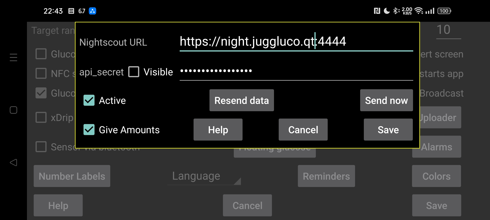

ar be de es fr hi ja nl pl ru sv tr uk uz zh en
В большинстве случаев вы также можете использовать веб-сервер в Juggluco или juggluco-server. Некоторым приложениям, которые не делают ничего, кроме отображения веб-страницы Nightscout, нужен cgm-remote-monitor. Вы даже можете использовать AAPS и AAPSClient с веб-сервером в Juggluco 7.4.1.
Все значения потока загружаются на сервер Nightscout в момент их поступления. При использовании нескольких датчиков загружаются все значения всех датчиков. Некоторые приложения/циферблаты/виджеты для часов Garmin предполагают изменение значений с интервалом в 5 минут. Когда они получают значения глюкозы с интервалом в одну минуту, они показывают только последнюю пятую часть кривой. По этой причине веб-сервер, встроенный в Juggluco, разделяет значения на 5 минут, за исключением случаев, когда для параметра «интервал = секунды» установлено меньшее значение.
URL-адрес: URL-адрес должен иметь вид https://имя хоста:порт, например https://myname.herokuapp.com:6789.
Активно: включение загрузчика
test V3: позвольте Juggluco использовать API/v3 для загрузки в Nightscout. Не используйте его для загрузки на сервер Nightscout, который ранее получал загрузки V1, и не отправляйте загрузки V1 на сервер Nightscout, который ранее получал загрузки V3. На месте api_secret нужно указать Access Token с разрешением на загрузку процедур и записей. Вы можете создать его в веб-интерфейсе Nightscout в разделе «Инструменты администратора».
Выдавайте суммы: также отправляйте суммы в виде лечения в Nightscout. Прикосновение к флажку приведет вас к диалоговому окну, в котором вы можете указать для каждой метки, что она означает в Nightscout. Эти характеристики доступны веб-серверу в Juggluco (Левое меню → Настройки → Веб-сервер). Только когда все метки обработаны, можно поставить галочку «Выдать суммы». Если вы позже добавите новую метку, вам придется не забыть самостоятельно указать, что с ней делать. Из-за ошибки в Nightscout вставки в более старые периоды времени или удаления отображаются только после добавления новых элементов с новым временем. Это значит, что в Nightscout лучше отправлять реже. Теперь это происходит каждый раз, когда пользователь переключается с Juggluco, выключая дисплей или переходя в другое приложение.
Повторная отправка данных: повторно загрузите все данные на сервер Nightscout.
Отправить сейчас: обычно данные отправляются немедленно, когда они поступают от датчика или зеркального соединения. Нажмите на эту кнопку, если по какой-то причине предыдущая попытка не удалась.
Версия WearOS Juggluco 4.15.0 и более поздних версий также может загружать значения уровня глюкозы в Nightscout. Почти во всех случаях вам лучше отправлять их через версию Juggluco на телефоне или планшете или через сервер Juggluco на компьютере. Это разряжает батарею, особенно если не удается связаться с сервером Nightscout, поэтому лучше отключить “Активно”, когда нет надежного соединения.